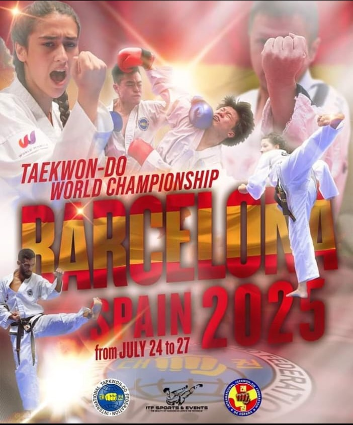
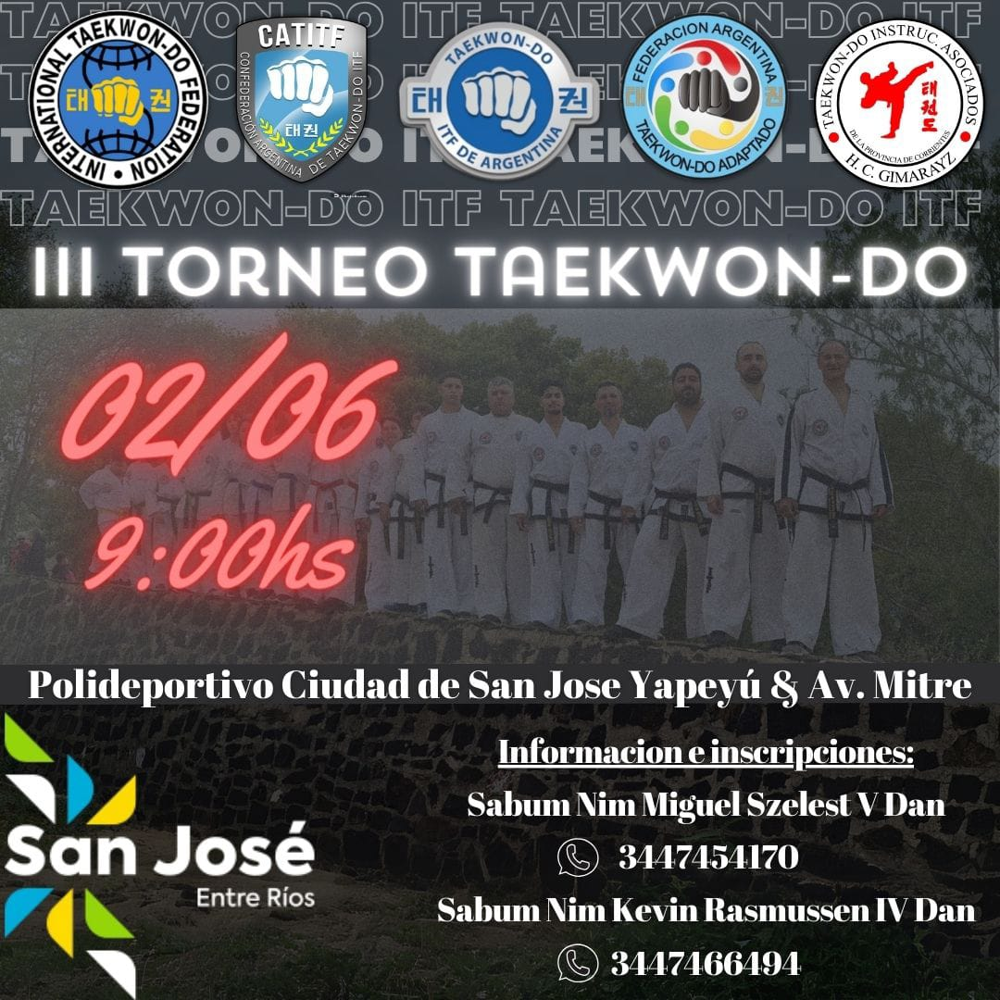
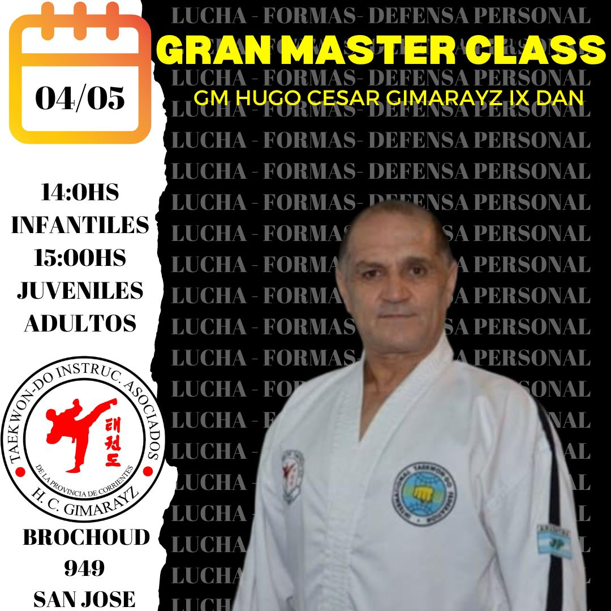

Volver a inicio
Información sobre cursos y torneos
Barcelona 2025: ITF World Championships Announcement

Campeonato Panamericano de ITF Taekwon-Do 2024
Torneo III Taekwon-do Polideportivo Ciudad de San Jose

Gran Master Class dirigido por el Hugo Cesar Gimarayz IX dan
